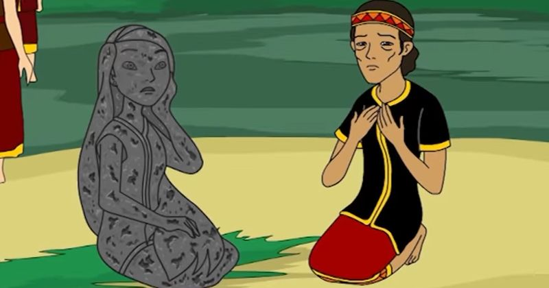

batu menangis
Pada zaman dahulu, hiduplah seorang janda tua bersama anak perempuannya yang sangat cantik. Sayangnya, anak perempuan itu memiliki sifat buruk. Dia pemalas, sombong, dan tidak pernah menghormati ibunya.
Meskipun hidup sederhana, sang ibu selalu berusaha memenuhi keinginan anaknya, termasuk memberinya pakaian yang indah. Namun, si anak malah semakin sombong dan enggan mengakui ibunya ketika mereka sedang berada di luar rumah.
Suatu hari, mereka pergi ke pasar yang cukup jauh. Sang ibu berjalan dengan susah payah sambil membawa barang-barang, sementara si anak berjalan di depan dengan pakaian indahnya. Di tengah perjalanan, beberapa orang yang mereka temui bertanya, "Apakah itu ibumu?" Dengan malu, si anak menjawab, "Bukan, dia pembantuku."
Sang ibu sangat sedih mendengar jawaban anaknya, tetapi dia tetap diam. Kejadian itu terus berulang, dan sang ibu tidak tahan lagi dengan perlakuan anaknya. Akhirnya, dia berdoa kepada Tuhan agar memberikan pelajaran kepada anaknya.
Tak lama setelah doa itu, tiba-tiba langit mendung dan hujan deras turun. Si anak merasa tubuhnya semakin berat. Dia menyadari bahwa tubuhnya perlahan berubah menjadi batu. Dalam ketakutannya, dia meminta maaf kepada ibunya, tetapi semuanya sudah terlambat.
Sang ibu hanya bisa menangis melihat anaknya berubah menjadi batu. Batu itu dikenal sebagai Batu Menangis, karena konon air yang mengalir dari batu tersebut adalah air mata penyesalan dari si anak.